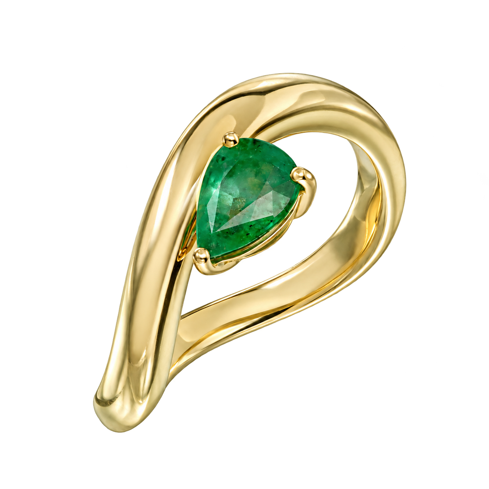
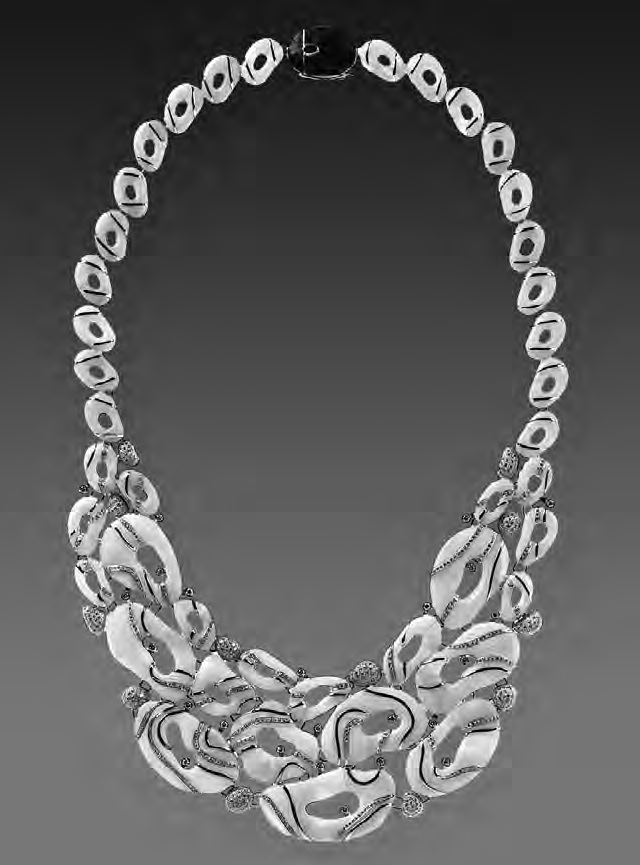
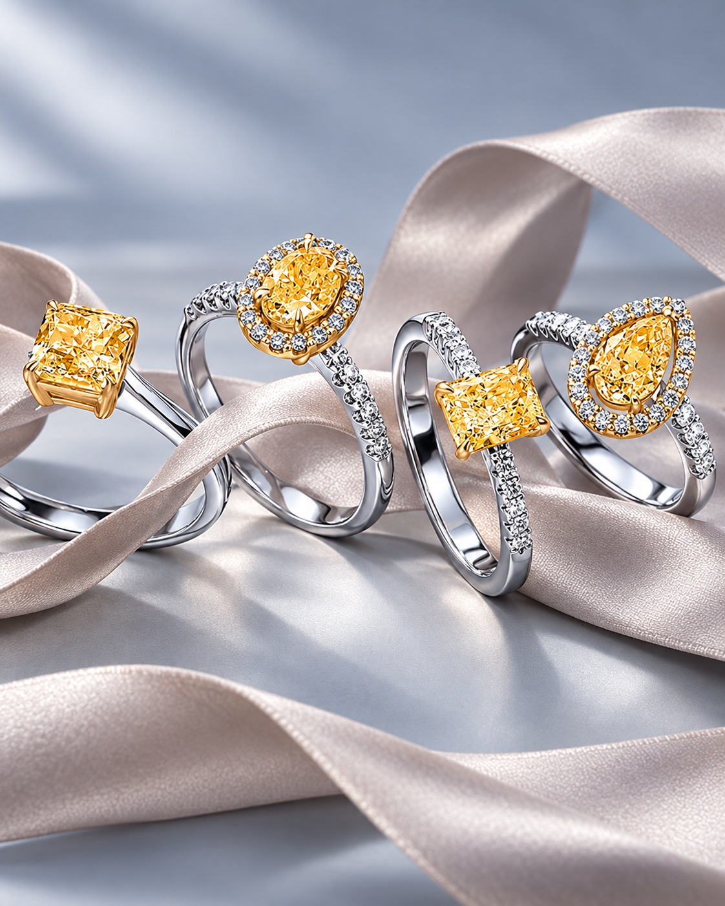
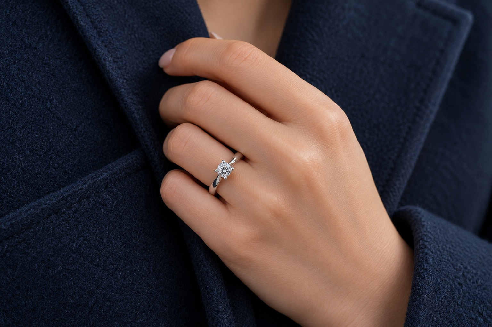
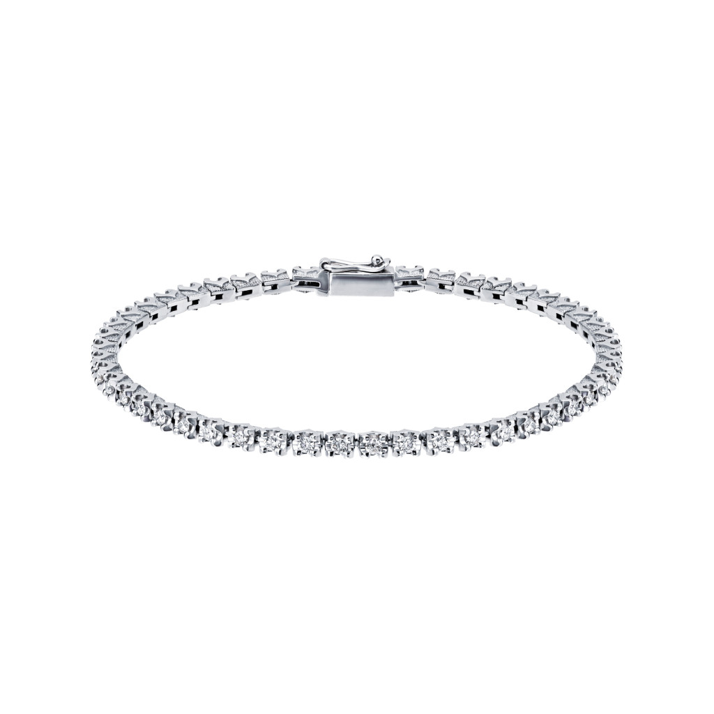
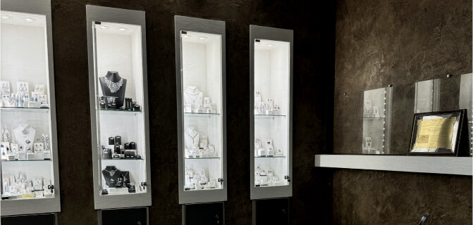

Санкт-Петербург · 1996
Всё начинается
с оправы.
Каст — это оправа, которая удерживает драгоценный камень. В нашем названии заключено то, с чего начинается ювелирное искусство: найти форму, достойную его красоты.
Завод основан в Петербурге 29 февраля 1996 года.

Тридцать лет создаём украшения,
которые становятся личными.
Петербургская ювелирная школа
За пределами
своего времени.

Государственный Эрмитаж.
Часть большого
искусства
Колье «Грёзы», созданное художником-ювелиром Верой Черновой на базе завода КАСТ, вошло в собрание Государственного Эрмитажа.
42 резных агата и 782 бриллианта соединены в композицию, в которой художественный замысел неотделим от точности исполнения.
Публикация ЭрмитажаТридцать лет истории
1996 — основание завода в Санкт-Петербурге.
2009, 2010 — Гран-при конкурса «Лучшие украшения России» на JUNWEX в Москве.
2017 — приобретение колье «Грёзы» Государственным Эрмитажем.
Мастерство
в трёх прочтениях.
От авторского произведения
до любимого украшения на каждый день.
Капсульные коллекции
Своя природа
красоты.

Жёлтые бриллианты раскрывают богатство своих оттенков в оправах из белого золота.
Открыть коллекциюПродолжение истории
Новые украшения.

Помолвка и свадьба
Решение
быть вместе.
Кольца, которые сохранят память
о самом важном «да».

Встретимся в Петербурге
Драгоценности
стоит почувствовать.

Рассмотрите камни, почувствуйте вес золота и примерьте украшение, которое привлекло ваше внимание. Приглашаем в шоурум завода.
Санкт-ПетербургЗеленков переулок, 7А, 4 этажПозвонить в шоурум+7 921 906 37 20